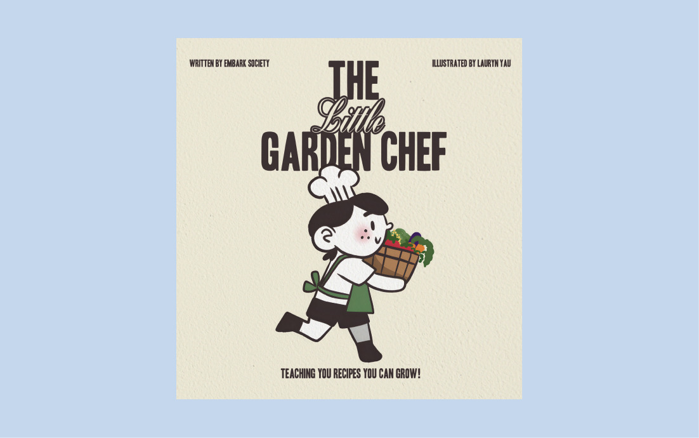

The Little Garden Chef: Children's Cookbook
Illustrating and writing a cookbook for kids and their parents.

Project Context
This was an academic project, for a third-year course Graphic Design in Transition: Print and Digital Books (PUB 331) at Simon Fraser University. The goal was to design, print and bind a cookbook using curated recipes in association with SFU's Embark Sustainability Society.
Deliverables
A min. 24-page book.
Duration
9 Weeks (September-December 2025)
Tools
Figma, Adobe InDesign
Team
Individual Project
WIP!
This project is currently a work in progress. Check back soon!